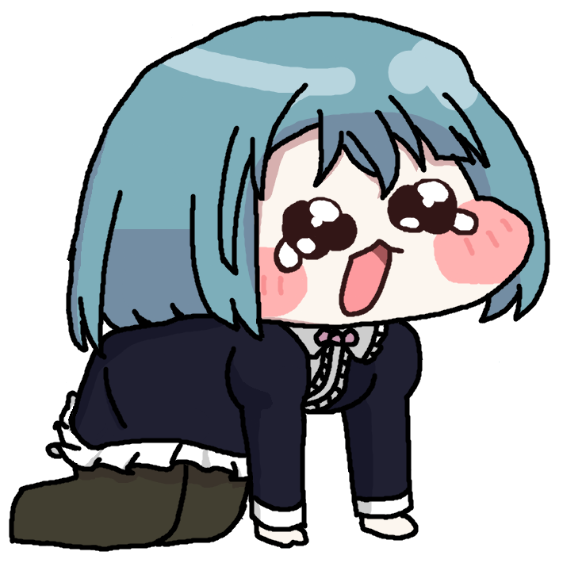

ぽちゃ茶のサイトへようこそ！！
ぽちゃ茶がプログラミングの勉強で作った小物置き場的なサイトです
作った作品やブログなどを置いておきます
オタク人生ではじめての推し
ゆらゆら（？）してる感じがすき
お顔がかわいいね…
めっちゃツンデレなのも良…ほんとはいい子なんだよね
フォンテーヌ勢のデザイン好き（シグウィンちゃんとかリネリネ兄妹とか）
まつ毛可愛くないですか？
守ってあげたくなる可愛さと守ってもらいたくなる強さがあります…
「ゲーム開発部みんな仲間！！」って感じもすき…関係性オタクなので…
ビジュがいい（直球）リスみたいなお口もかわいいね…
がめつい感じの第一印象とは裏腹に他人思いで努力家、自己肯定感の低い子…私の好きな要素詰まりすぎでは？